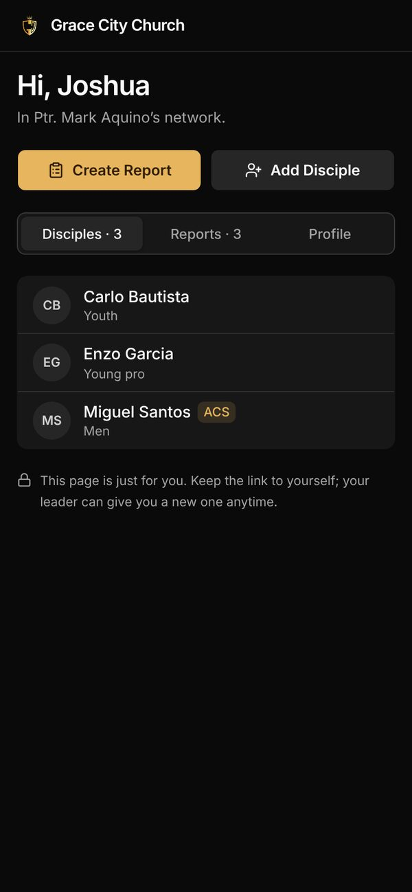
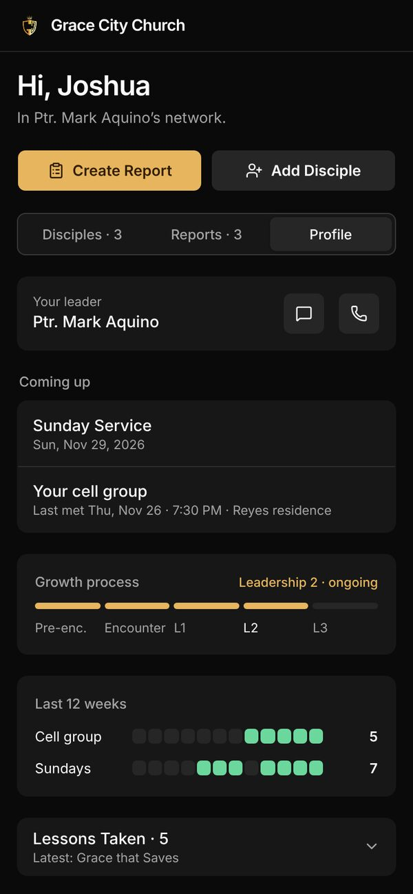
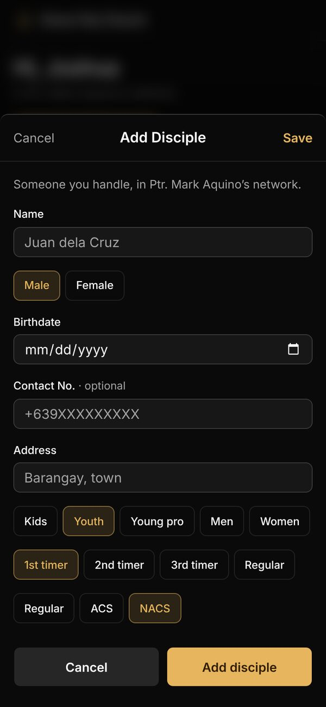
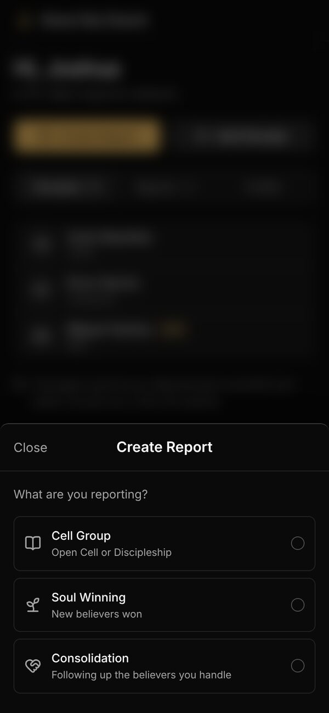
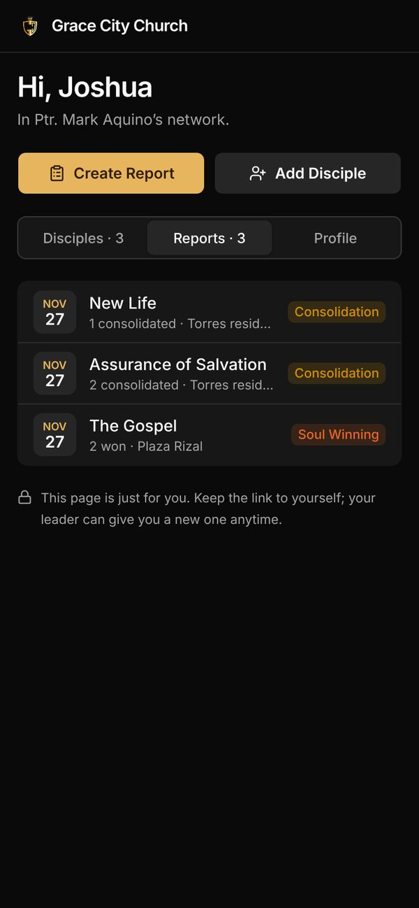

Your own page at Grace City Church: your leader, what's coming up, your growth and attendance. From it you can also add the people you handle and send your reports.
Your leader sends you a link, or shows you a QR code to scan. Open it on your phone. There's nothing to sign up for and no password.

Tap Profile. From top to bottom:
Is something else wrong, like your name, birthday or growth step? Tell your leader and they'll fix it.

If you lead or help lead a cell group, Disciples lists the people you handle. Each shows their member type, and a badge only when something isn't usual (for example ACS or 1st timer).
| Word | Meaning |
|---|---|
| NACS | Hasn't attended a church service yet |
| ACS | Has attended a church service, not yet regular |
| 1st / 2nd / 3rd timer | Times they've been to a cell group |
| Regular | Comes regularly |
To change or remove someone you added, ask your leader.

Tap Create Report and choose what you're reporting:
| Cell Group | An Open Cell or Discipleship meeting |
| Soul Winning | New believers won |
| Consolidation | Following up the believers you handle |
Reports go to your leader's network. Your leader is named as the network leader, so you don't need to choose one.

Add the people you handle first (see Your disciples). The cell group report lists them as attendees.
Tap Reports to see what you've sent, newest first. Each shows the date, the lesson, how many came, were won or were consolidated, and where. A small label says whether it was a cell group, soul winning or consolidation.
Sent something wrong? Ask your leader to fix it in GCC Admin.

Your leader may have made a new link or turned your page off. Ask them for a new link.
Yes. Open the same link in any browser. Just don't leave it open on a shared computer.
Yes. Your contact number and address update right away in GCC Admin, and your reports show in your leader's network.
A cell group report lists the people you handle. Add them with Add Disciple, then report.
Attendance is marked by the church at each service and by whoever reports your cell group. Tell your leader which week it was.
Only someone with your link, and your leaders in GCC Admin. Keep the link to yourself.